REGER：在生成器内部学习物品间的语义、转移和协同偏好关系
REGER 的英文标题是 REGER: Modeling inter-item Relations with Semantic IDs for Generative Recommendation。第一作者 Yuxi Huang 及全部作者来自电子科技大学，作者还包括 Silin Zhou、Chenhao Wang、Zihan Li、Gangming Guo、Pei Ke、Shen Gao 和 Shuo Shang。论文首版于2026年10月27日17:25 UTC公开，北京时间为10月28日；本笔记核验于10月30日。唯一论文入口为 arXiv:2610.37584。本轮未核验到本文独立代码或项目入口，参考文献中的其他工作仓库不能当作 REGER 的实现。PDF 的会议名、ISBN 和 DOI 仍包含占位内容，不能据此认定会议录用。
这篇论文研究固定语义ID下的生成式下一物品推荐：先让生成器通过语义邻居任务获得初始化，再改变历史编码的注意力结构，最后把判别推荐器的物品偏好翻译为生成器可学习的前缀分布。最需要细读的是第三步：理论给出了完整分布的精确分解，而实际训练只访问真实目标路径，二者有明确的权重差别。
共享语义ID前缀并不会让随机初始化的token向量和生成器自然继承物品语义关系；将历史展开为token并只监督一个正例，也没有显式约束完整物品之间的行为转移与协同偏好竞争。
1. 背景和问题
生成式推荐把传统的“为目录中每个物品计算匹配分数”改为“逐步生成某个物品的离散标识”。以残差量化为例，一个物品可以由三个由粗到细的语义码和一个冲突消解码组成；不同物品可能共享前几个码，因此生成器能够借助共享token迁移知识。相比独立物品ID，这种组织方式提供了语义共享的机会，但机会不等于已经学会。量化器根据内容向量做重建，推荐生成器根据历史预测下一次交互，两者的优化目标不同。即使离散码来自质量很高的文本向量，生成器中的token embedding若重新随机初始化，就需要通过交互数据重新学会这些码的组合及关系。
论文把关系分成三类。第一类是内容语义相似：两件商品的文本描述可能接近，但各自完整SID的生成器表征未必仍然接近。第二类是有向行为转移：用户先看物品甲再看物品乙，这种相邻顺序可以携带购买流程、兴趣变化或关联消费信号。第三类是用户特定的相对偏好：对于某个用户，多件候选可能都相关，却相关程度不同。语义相似、行为相邻和偏好更强不是同义词。某件内容很接近的物品可能不适合当前用户，频繁相邻出现的物品也未必应得到相同推荐概率。REGER希望在各个训练环节分别表达这些关系，而不把所有问题压到最终的正例交叉熵上。
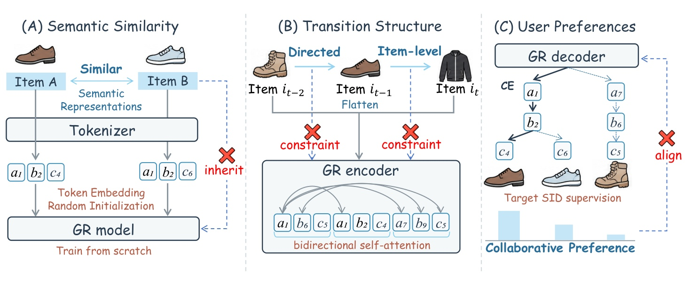
Figure 1 按从左到右展示三个层次的断层。左侧的物品A与B在原始语义空间中相似，经过tokenizer得到共享前缀，但下方的token向量仍随机初始化，图中的红叉强调“量化器保存了某种结构”和“生成器已经继承该结构”之间存在缺口。中间把连续交互的三个物品展开为一串token；原始双向自注意力可以访问所有历史位置，却没有把完整SID的边界和前后物品方向写入局部约束。这里批评的不是双向访问本身非法，而是通用token交互未必高效地学到所需物品关系。右侧的解码树只沿目标物品路径接受交叉熵监督，用户对其他候选的相对偏好没有作为显式分布进入训练。
图中三块对应后文GSR、ITSA和HCPD，但图本身没有证明三个缺口一定导致性能下降。它提供的是任务拆解：内容关系应在预训练中进入参数，转移关系应在历史编码时进入注意力，偏好关系应在SID生成时进入监督。这样的拆解使消融有明确解释对象，也提醒读者不要将三种关系混为一个“协同信号”。特别是右侧竞争分支代表的是物品集合，训练如果只提高目标token概率，会把非目标分支一起压低，却不知道哪些非目标物品也受用户喜爱。教师分布的作用就是为这些分支提供细粒度相对信息；它不是给输入历史增加一条新的用户行为，也不是把内容相似度直接当作点击概率。
既有工作已经从多个方向处理关系。改进tokenizer的方法会引入协同对齐、码本多样性或拓扑结构；ActionPiece和TIGER-SST改变历史token的组织；混合检索把生成分数与连续匹配结合；其他训练目标则用奖励或前缀打分引入协同模型。REGER的差别在于保持固定长度SID，把改动主要放在生成器的初始化、编码与监督中。这种选择有明确优势：推理时不必继续调用教师或额外密集召回分支。但它仍依赖内容编码、量化映射和判别教师，因此不能被描述为完全脱离传统协同推荐的端到端发现。
这里的“推荐”具体是顺序交互数据上的下一物品预测，输出为目录内的物品，而不是对曝光候选的点击率估计，也不是对话式自然语言解释。实验采用用户历史与目标SID，不能据此宣称已经验证点击、转化、长期满意度或业务价值。历史按时间排序并截断为最近20次交互，5-core过滤又去除了低频用户和低频物品。这样的设置使研究问题更清楚，但与工业中的长序列、多意图、冷启动和动态目录仍有距离。所谓语义知识帮助稀疏物品，首先是机制动机，本文没有单独给出足以支撑全面冷启动结论的线上试验。
理解该工作的另一个前提是区分可见历史内的双向编码与预测目标的自回归生成。所有输入交互发生在目标之前，因此编码器全局头可以双向看历史；局部头中的“前一物品到当前物品”也是历史内部的结构偏置，并不表示整网严格因果。解码器依然在真实前缀条件下训练、在生成前缀条件下推理，存在通常的训练推理差异。后文的蒸馏沿真实路径展开，也不能自动消除生成走错分支后的分布偏移。论文的主要价值是将这些信息表达得更直接，而不是宣称一次解决生成推荐的所有误差来源。
另一个容易被忽略的出发点是，语义码共享的是离散词表，不是物品级独立参数。某一层同一个码可以被不同完整物品复用，单独提升这个码的概率会影响多个物品。因此，内容相似与用户特定偏好的对应并不局部于一个token：必须看到完整前缀和该分支覆盖的物品集合。论文选择前缀树组织协同监督，正是利用“同一前缀的叶子集合互不重叠地被下一层分支划分”这个结构。树不是额外学习的用户兴趣层次，而是已有SID映射诱导的目录组织；教师也没有创造新的可推荐物品，只是重分配已存在目录的相对偏好。
这也解释为什么本文不能只作为一种改良交叉熵阅读。下一物品的真实日志只观察到一次被选择的结果，其他候选并不必然都是负例，日志还受到原有曝光与选择机制影响。冻结教师给出的分布同样不是反事实真值，但它为单目标监督提供了不同的归纳偏置。研究问题于是从“如何更强地拟合正例”转为“如何让额外的物品关系约束进入生成过程，并检查它是否有损害”。后面的弱教师负结果正是回答后一半问题的重要证据，不能只在摘要级阅读时省略。
2. 方法
2.1 Generative Semantic Retrieval：从完整SID学习语义邻居
论文先用Sentence-T5编码物品文本，再经PCA白化将768维压到128维，使用RQ-VAE得到离散码。对2014数据，文本包含标题、价格、品牌和类别；2023数据使用标题、特征、类别和描述。量化器每个数据集训练一次、固定seed2024，并在后续推荐器的多随机种子实验间共享映射。量化过程可以写为：
符号解释：$x_i$是物品$i$在量化空间的向量，$r_\ell$是第$\ell$层后的剩余误差，$c_{\ell,k}$是第$\ell$层码本的第$k$个向量，$s_i^\ell$为最近码字的索引。各层依次描述前面未解释的残差信息，最后额外追加冲突消解token，以保证每个目录物品对应唯一叶子。这个唯一性是后面前缀树精确分解的重要条件，不能把存在碰撞、无法区分物品的码直接套入定理。
GSR不复制码本向量作为全部解决方案，而是在原内容向量空间为每个源物品检索近邻，让生成器根据源SID生成邻居SID：
符号解释：$e_i$是量化之前的物品文本embedding，$\mathcal I$为目录，$\mathcal N_K(i)$不包含自身，$s_i$和$s_j$分别是源和邻居的完整SID，$p_\theta$是生成器条件分布，$L+1$包括冲突消解位置。训练时编码器看到完整源物品，解码器在真实邻居前缀下预测下一码，token向量与encoder-decoder共同更新。其输入输出是离散码，但监督来自连续语义邻域，因此将“两个完整物品相似”翻译成生成器可以优化的任务。
这种预训练不使用用户交互构造邻居，却不是完全无推荐反馈地挑选模型：论文依据验证集推荐表现选取预训练checkpoint。进入第二阶段后，预训练参数初始化推荐模型，输入改为用户历史，输出改为真实下一物品。语义邻居并不保证是用户偏好的替代品，所以推荐微调仍然必要；邻居范围过大还会纳入较远物品，削弱有用的局部语义关系。GSR的可迁移部分是参数中学得的SID组合知识，推理时不再为每个请求做一次邻居检索。
2.2 Item Transition Structure Attention：全局历史与相邻物品转移
ITSA在每个编码层中将原有注意力头分为token-global和item-local两类，保持每个头的参数量不变。所有头遵循T5形式，将投影后的注意力分数、相对位置偏置与mask相加：
符号解释：$h$为头索引，$Q_h,K_h,V_h$来自同一历史隐藏状态的查询、键和值投影，$B_h$为相对位置偏置，$M_h$决定可见位置，$O_h$为该头输出。该式沿用论文记法，不能把没有明写的缩放重新宣称为作者新增机制。全局头对全部有效历史token开放，负责非相邻物品关系；局部头则按完整SID边界设置窗口，而非以任意固定token数切片。
符号解释：$p$和$q$是查询与键的token位置，$g(\cdot)$把token位置映射到对应的历史物品位置。当前物品内每个token能看同一物品的所有token，以及紧邻前一物品的所有token；第一物品只看自身，padding始终屏蔽。两个SID内部保留双向交互，是因为码的粗细顺序不是用户交互的时间顺序；前一物品到当前物品的有向窗口则向编码器注入短程行为转移偏置。
两类头的输出拼接后通过标准输出投影融合。全局头仍可让历史后部信息进入前部表示，因此局部mask不是整网绝对因果性的证明；它的作用是提供一条偏向相邻转移的专门通路。GSR阶段输入只有一个源SID，两类头都仅在该物品内工作；第二阶段历史由多个SID组成，局部头才额外获得前驱物品窗口。同一个结构因此兼容两个阶段，但两阶段发挥的功能不同。本文并没有证明稀疏可见性一定转化为计算内核加速，ITSA主要是表示结构改变，效率应读实际测量。
2.3 Hierarchical Collaborative Preference Distillation：合法分支上的偏好匹配
把所有唯一SID组织成前缀树，根是BOS，叶子是一件完整物品。某个前缀$a$对应目录子集$\mathcal I(a)$，其合法下一token集合记为$\mathcal V(a)$。对于严格正的物品分布$P$，前缀概率与条件转移的定义、完整物品概率的分解和KL链式分解为：
符号解释：$a\oplus v$表示前缀接上token，$m_P(a)$是该子树的总概率，$\mathcal P$包含所有非终止前缀，$Q$是同目录上的另一严格正分布，$D_{KL}$衡量分布差异。条件概率连乘时前缀质量逐级相消，最终得到叶子概率；将每件物品的对数概率比按树边重组，就得到按$P$的前缀质量加权的条件KL。这是精确代数关系，但其范围是完整树、同一叶子目录和指定权重，不能直接等同于任意路径采样目标。
教师使用冻结的DuoRec，输入同一个用户历史，对目录物品打分。选择DuoRec是因为它通过对比学习缓解表示退化，能提供有区分度的用户偏好。随后把同一分支下物品概率相加，得到教师的合法token分布；学生则在同一合法集合内重新归一化：
符号解释：$r_u(i)$是教师对用户$u$与物品$i$的分数，$P_T$是目录softmax，$q_T$是子树质量比，$q_\theta$为学生在合法延续上的条件概率，$H_u$为用户历史。一个token分支可能代表很多完整物品，因此教师监督的是分支所含物品的总偏好，而不是只给某个码赋独立语义标签。合法分支集合由目录SID确定，学生在集合外的质量不会进入这个条件KL；这不意味着集合外token完全没有惩罚，因为全词表交叉熵仍在共同训练。
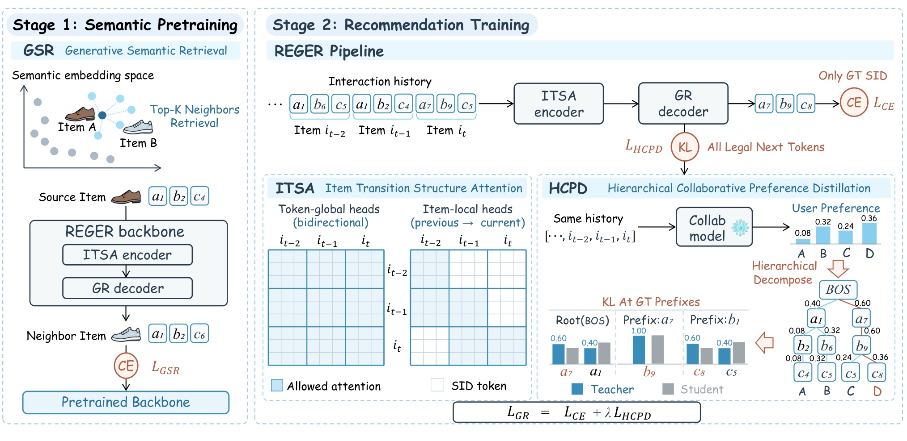
Figure 2 左侧展示源物品经过内容向量近邻检索后，以源SID到邻居SID的生成任务训练整个骨干；右上角将该参数初始化用于历史到目标SID的推荐训练。右下方的ITSA面板用完整物品边界区分两类头：全局矩阵保持广泛历史访问，局部矩阵则突出当前物品及紧邻前驱。这里的浅深方格不是新的标签，而是可见性结构，改变的是信息汇合路径。HCPD面板从同一历史得到判别教师的物品概率，再沿前缀树把多个叶子的质量合并到合法分支；学生与教师在真实目标前缀处比较整组条件分布，而非只比较真实下一码。
这张图将预训练和协同监督画在同一框架内，但两种额外信息的生命周期需要区分：语义邻居构造发生在预训练期，教师发生在推荐训练期，推理只保留生成器。图中真实路径决定“在哪里蒸馏”，每个位置的全部合法分支决定“比较哪些替代候选”；这正是HCPD能把负分支关系引入单目标训练的原因。蓝色和灰色条形若已有相同相对比例，条件KL可以为零，即使学生仍给非法token分配质量，交叉熵也继续调整目标与合法总质量。框架图因而支持模块连接的解释，不支持“训练严格实现完整目录KL最小化”的额外主张；实际采样权重还必须看下式与附录。
符号解释：$y$是真实下一物品，$a_\ell=s_y^{<\ell}$是真实目标的前缀，$\lambda$平衡交叉熵与平均条件KL。前一项使用全词表概率，后一项使用合法集合条件概率，教师冻结而学生更新。HCPD并非在每次训练时遍历整个前缀树，它只在真实SID路径上评估条件分布，计算上更可控，却也继承观测交互的前缀覆盖偏差。
符号解释：$R$是固定历史下目标物品的采样分布，$m_R(a)$是其前缀概率质量，$d(a)$是该位置的教师学生差异。只有目标按教师分布$R=P_T$采样时，该期望才是缩放后的完整物品KL；真实交互目标通常不满足这一条件。因此精确分解定理是设计依据，真值路径HCPD是可计算代理目标，二者不能写成无条件相等。
符号解释：$t$为教师合法分布，$p$为学生全词表概率，$q$为学生合法条件分布，$Z$是合法token总概率，$z_v$为合法token的原始logit。全词表KL多出对合法质量不足的惩罚，与交叉熵已有的质量推动发生叠加；HCPD集中匹配合法分支的相对偏好。当只有一个合法延续时，条件KL恒为零，不能再从该位置学习候选竞争关系。推理阶段不调用教师，采用全词表概率的累计log分数做无约束beam search，不能把训练的合法归一化误写成推理时的硬约束解码。
3. 实验结果
3.1 数据协议与2014主结果
主实验使用Amazon Reviews 2014的Beauty、Sports、Toys，补充实验使用2023的Instruments、Scientific、Games。六套数据均5-core过滤，按用户时间排序，最近一次交互测试、倒数第二次验证、其余训练，历史最多20条。2014三个数据集分别有22,363、35,598、19,412名用户，12,101、18,357、11,924件物品；2023的用户规模为57,439、50,985、94,762。三次推荐器实验使用seed2024、2025、2026，表中误差是标准差乘100后的表示，不能把“±0.05”读成原始Recall标准差0.05。指标为Recall与NDCG，分别评价命中与前端排序，均报告前5和前10。
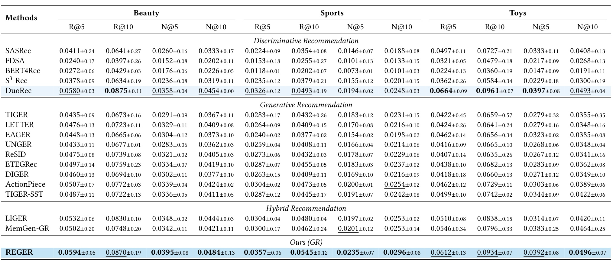
Table 1 将判别、生成、混合方法分组，最后给出REGER。Beauty的Recall@5由TIGER的0.0435提高到0.0594，绝对差0.0159、相对约36.6%；与更强DuoRec的0.0580相比，差距只有0.0014，相对约2.4%。同一数字选择不同基线会给出很不一样的改善幅度，因此不能只报较大的相对百分比。Sports的Recall@5为0.0357，优于DuoRec的0.0326；Toys为0.0612，仍低于DuoRec的0.0664。Toys的NDCG@10则为0.0496，略高于DuoRec的0.0493，说明更多总命中和把已命中物品排在前面并非同一能力。
从本文列出的生成与混合基线看，REGER在2014各列都有明显竞争力，但“生成推荐全面超过判别推荐”仍不成立。比如Beauty Recall@10为0.0870，略低于DuoRec0.0875，Toys Recall@10也低于0.0961。数据是稀疏商品交互，并且只看较短近期历史；在这个范围内，三个模块一起改进了生成器，并不能推出在所有业务、全部排名深度或不同候选构造下都占优。三次随机种子可观察稳定性，但主表没有给出每对比较的显著性检验，极小差值不应被写成已证明显著。表格的价值在于完整呈现不同方法族，提醒读者先找强基线，再确定需要迁移的模块。
还应注意判别、生成和混合方法的在线形态不同。混合方法保留连续匹配或集成通路，REGER在推理时则仅使用SID生成；这使它在表示上更统一，却不能由主表直接推导成本更低。表中只报告推荐质量，没有把不同方法服务端的索引占用、候选生成时间和尾延迟一起比较。另外，跨数据集的原始分数受用户数、目录大小和交互稀疏性影响，不能把Toys的分数高于Sports解释成该方法更擅长玩具语义。正确读法是同一列内部比较，再看多列趋势是否一致。把判别强基线单独保留，还能避免由于只选相对较弱的生成基线而放大改进叙事。
3.2 训练目标比较与模块消融
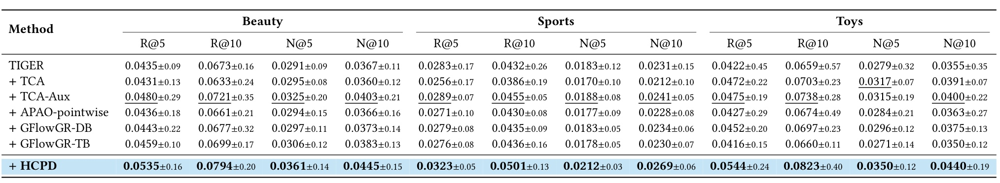
Table 2把骨干固定为TIGER，并让使用协同信息的方法共享同一个DuoRec，以减少“换了更强教师”造成的解释混淆。Beauty Recall@5从0.0435到HCPD0.0535，NDCG@10从0.0367到0.0445；Toys Recall@5从0.0422到0.0544。这里HCPD结果不同于完整REGER的0.0594或0.0612，因为该对比没有把整个框架的收益都算作蒸馏收益。TCA有些列低于原TIGER，TCA-Aux总体更好，但仍低于HCPD；这提示协同分布不是只要加入就有效，归一化范围和监督形式影响学生实际学到什么。
GFlowGR两种目标在本表也未普遍超过基础TIGER，不能把本文结果概括为所有教师辅助方法都有收益。HCPD相较APAO-pointwise的优势，一部分对应“只强调真实前缀”与“在真实前缀处匹配多个合法替代分支”的差异，但实验还涉及目标函数实现和调参，不能从表格单独证明某一个数学性质是唯一因果因素。作者对TCA与TCA-Aux保留其约束beam实现，其他方法采用无约束beam，这保证各方法遵循其设定，却使端到端测试时间并非仅由训练目标决定。复现实验应同时记录各方法的解码选项，不能只复用一组loss名称就声称完全公平的系统比较。
从监督信息来看，该表还区分了教师“给出一个物品排序”与教师“参与学生的中间条件分布”这两件事。同样的教师分数经过不同目标进入生成器，会对非目标分支产生不同梯度。HCPD没有要求真实下一token之外的合法分支一律为零，因此能把多个相关候选的偏好一起传入参数；但它仍然依赖教师对这些分支的估计。对目标函数的比较应结合正文的合法集合定义，而不能仅因列名含有蒸馏、奖励或前缀就认为它们提供了完全等价的信息。当前表的范围是作者给出的实现与调参设置，尚不能说明其他目标在更多预算下无法达到相近质量。
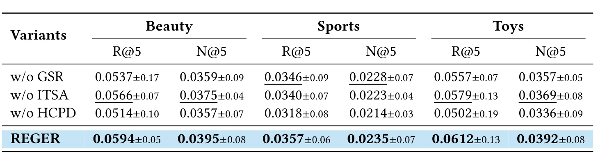
Table 3分别移除语义预训练、改回普通双向注意力、去掉偏好蒸馏，三数据集的Recall@5与NDCG@5都下降。Beauty完整Recall@5为0.0594，去GSR后0.0537，去ITSA后0.0566，去HCPD后0.0514；对应绝对损失分别为0.0057、0.0028、0.0080。这支持三种关系入口在当前框架内都有作用，且HCPD在这里损失最大。但移除一个模块后的变化不能当作独立可加贡献：初始化、编码结构和监督可能相互依赖，三个相对增益相加不会得到完整框架的总增益。
Toys中去HCPD后的Recall@5为0.0502，完整为0.0612，损失约18.0%；Sports从0.0357到0.0318，约10.9%，与论文对10.9%至18.0%的概括一致。去ITSA替换为同头数的普通自注意力，减弱了参数量改变的混淆；去GSR则同时少了预训练计算与语义监督，因此当前消融不能将额外训练步数与邻居任务的语义作用完全拆开。更严格的后续实验应加入等计算的其他预训练任务，以及多个教师和多个tokenizer，观察关系建模是否仍有同样相对价值。本表证明的是模块在本设置中的必要性，而非跨场景普适必要性。
消融也帮助划清“关系在何处进入模型”的边界。没有GSR，第二阶段仍有ITSA与HCPD，说明教师和结构不能完全替代内容预训练；没有ITSA，模型仍能从全局历史学习转移，但不再有专门的相邻物品通路；没有HCPD，GSR带来的语义与真实正例监督仍在，却缺少对候选分支相对概率的明确约束。三种变体均不是把模型变成随机或无监督系统，因此性能下降更有解释价值。同时本文没有完整的二阶交互消融矩阵，不能确定某两个模块同时拿掉时损失是否线性，也不能把当前最小掉分的ITSA判作在任何预算下都不值得实现。
3.3 效率与额外监督成本
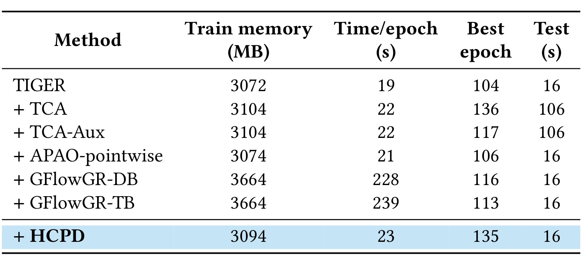
Table 4在单NVIDIA L40、FP32、Beauty、训练和测试batch均256、关闭KV缓存的条件下比较。TIGER训练显存3072MB、每轮19秒、最佳轮数104、完整测试16秒；加HCPD后3094MB、23秒、135轮、测试仍16秒。单轮时间约增加21.1%，显存约增加0.7%，但达到所选最佳轮数也更晚，所以不能把“每轮仅多4秒”直接当作整个训练总成本。将均值相乘只能粗略说明训练阶段开销可能增大，并非作者报告的完整训练用时，也未包含教师训练、语义特征生成、量化器和GSR预训练。
测试16秒保持不变，与推理不再调用教师的设计一致。TCA与TCA-Aux测试106秒，约为16秒的6.6倍，但作者明确二者使用约束beam而其余方法使用无约束beam，因此这个差值不是HCPD单独带来的内核加速。GFlowGR训练每轮228或239秒，显存3664MB，显示在这组实现中更昂贵；仍不能将其外推为所有硬件、精度和优化实现下的固定倍率。表中的“Test”是整套测试集总时长，不是每用户延迟，也没有p99、吞吐压力或多租户服务指标。对工程落地，当前证据最稳妥的结论是：将协同知识在训练期内化后，部署可以维持纯生成器路径，但生产级开销还需要额外测量。
这张效率表尤其适合用来检查论文所称“训练成本适中”的边界。HCPD不额外增加推理参数，表中训练显存也只小幅变化，但教师分布的计算或缓存方式会随着目录扩大而重要：合法分支概率需要聚合多个叶子物品的偏好，并不等价于只对一个正例运行教师。本文没有在该表系统扫描千万级目录、频繁上新和跨设备通信，因此不能据这组小目录测量排除目录扩展问题。还有一点，最佳轮数是三次运行的均值，乘以单轮用时不能重建每个seed的早停轨迹；报告总训练成本时应读取真实日志，而不是以均值乘积制造一个貌似精确的新结果。
3.4 语义、转移与超参数的机制证据
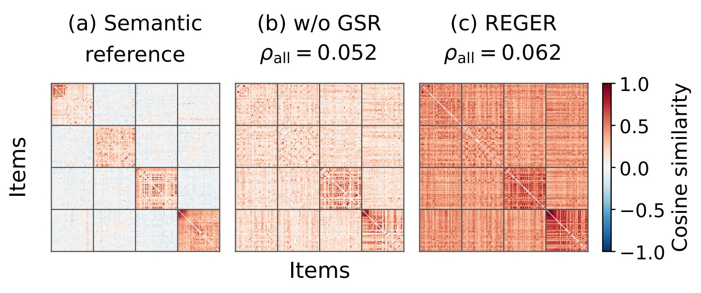
Figure 3固定同样160个物品和排序，比较原始语义参照、无GSR和REGER的余弦相似度热图。图中使用同一色阶，红色代表更大相似度，蓝色代表较低；REGER整体更偏红，并不自动表示语义结构更准确，因此论文另给全目录所有不同物品对的Spearman相关系数。无GSR为0.052，完整为0.062，方向确有提高，但绝对值仍很小，不能写成“几乎重建了原语义邻域”。作者展示的160件只是可视化样本，相关系数则基于全目录不同物品对，两个统计范围不能混淆。
这组证据与GSR“将内容近邻监督传入生成器”的设计相符，却不足以说明提高平均相似度本身导致推荐收益。向量整体收缩到更相近的区域也能改变热图颜色，需要排名相关、局部近邻保持率和个性化性能共同判断。当前图只提供一个低幅度机制线索；更强的检验是比较同样训练预算下的随机邻居、不同内容编码器和不同密度物品，观察相似度结构是否与下游收益一致。不能把图中更红的视觉印象当作更强的定量证据，也不能把0.010的相关增加改写成推荐指标增加0.010。
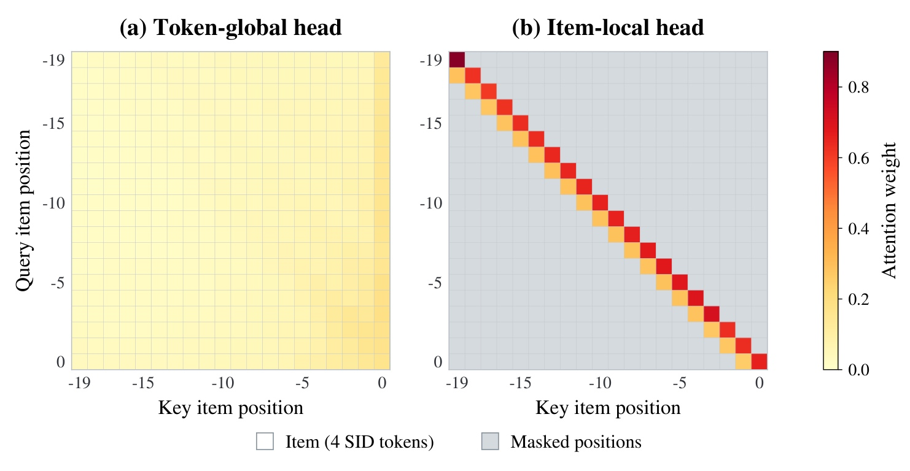
Figure 4将最终编码层的注意力汇总到物品级，在Beauty测试历史的有效位置对上取平均。左右轴都按历史物品位置标记，0是最近交互；左图token-global头在更广历史上分配权重，右图item-local头主要在自身及紧邻前驱的窄带上有值，灰色区域是被mask的位置。对角线强并不表示模型只会记忆自身，次对角线反映了前驱到当前物品的方向通路。图底部指出每个物品对应4个SID token，提醒读者这是token注意力经过物品聚合之后的展示，不能直接当作原始单token权重。
局部图出现窄带一部分由mask定义必然产生，因此仅看形状不能独立证明学到了有意义的行为转移；真正需要关注的是可见区域中自身与前驱的相对权重、以及消融后推荐指标如何变化。左图跨历史较均匀的访问与右图定向局部结构构成互补，但不是证明全局头没有短期偏好或局部头只携带协同信息。平均图还会掩盖用户差异，线上长历史或多兴趣切换可能产生不同模式。该图最合理的用途是核对实现的结构行为与设计是否一致，再将其与Table3的受控替换结果共同理解。
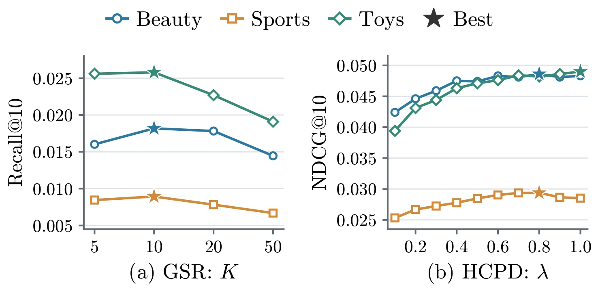
Figure 5左侧横轴为GSR邻居数，纵轴为预训练checkpoint的Recall@10；三条曲线分别对应Beauty、Sports和Toys。四个候选邻居规模为5、10、20、50，均在10附近最好，扩大到更远邻居后下降。它支持语义监督存在范围选择问题，不能简单把更多预训练样本等同于更好关系学习。右侧横轴为HCPD权重，纵轴为NDCG@10，Beauty和Sports在0.8附近最好，Toys在1.0最好。两侧评价对象与指标不同，因此不能把左图的Recall变化与右图的NDCG变化直接比较幅度。
作者使用验证表现选择K与蒸馏权重，给出了本文可复用的默认点，却没有证明这些点跨目录、教师或行为分布不变。左侧预训练性能明显低于完整推荐结果，这正说明它是预训练checkpoint分析，不是最终模型退化；右侧即使大体上提高，也有平台或回落，教师监督过强可能压制观测目标的纠偏。更有意义的后续测试是按物品密度和教师校准质量分组，确认最佳权重是否受教师错误影响。图中星号只标作者所选最优点，没有给出所有点的误差条，因此邻近超参数的小差距不能被视作已验证显著。
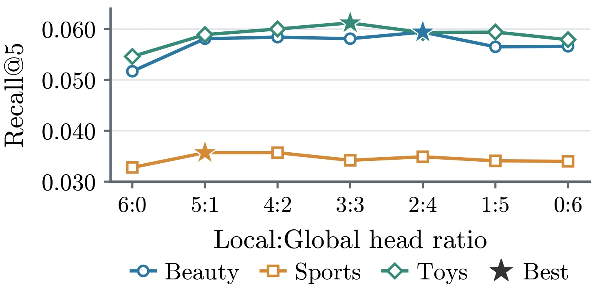
Figure 6保持每层六个头，横轴从6:0到0:6逐步增加全局头比例，纵轴为Recall@5。Beauty在2:4、Sports在5:1、Toys在3:3的配置较好，说明不同数据集需要的局部与全局混合并不相同。两端对应全部局部或全部全局，通常不如中间点，支持给相邻转移专门通路，同时保留跨历史访问。这里改变的是已有头的mask类型，参数量并未随局部头比例增加；但注意力可见性不同仍会改变表示学习和优化，不能只凭相同参数数目就排除全部训练差异。
图中的三条数据曲线基准水平不同，反映各数据集任务难度和统计特征，而不是某个数据集的局部关系“更强”可以从纵轴高低直接推断。Sports选择5个局部头可能与短程关系有关，但作者没有提供因果分析去证明原因。本文最可操作的启发是将头比例作为验证项，并保留两端对照，而不是全局统一采用一半局部一半全局。该配置在2014数据的选择也不能照搬到2023，附录针对Instruments、Scientific和Games使用不同的比例与权重。进一步在同一目录的时间漂移和长短历史切面复查，才能知道最优比例是否稳定。
3.5 跨数据集、教师与归一化的边界
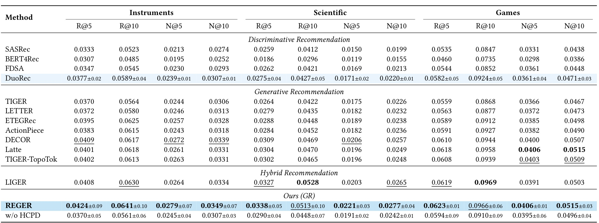
Table 6提供较大2023数据的结果，许多基线数值来自已发表结果而非本轮统一重跑，虽然作者说明采用同样5-core和最长20历史，仍要保留预处理、实现和调参差别的可能。REGER在Instruments Recall@5为0.0424，高于DuoRec0.0377，也高于表中生成基线；Scientific Recall@5为0.0338，但Recall@10为0.0513，低于混合方法LIGER的0.0528。Games Recall@10为0.0966，略低于LIGER0.0969，NDCG@5和NDCG@10与Latte在显示精度上相同。因而这里适合说“整体有竞争力”，不适合写“六个数据集全部指标第一”。
更有意思的是Scientific里DuoRec的各列都低于无HCPD学生，例如Recall@5为0.0275而无HCPD为0.0290，加入DuoRec蒸馏后反而到0.0338。这支持教师的最终前K命中不完全代表其分布的监督价值：教师可能在许多分支上提供互补的相对信息，即使独立排名更差。但这不是弱教师永远有帮助的证明，因为接下来的教师替换正展示了反例。论文把这点归因于DuoRec有更有区分度的物品表示，是合理解释而非已被完全隔离的因果结论；应结合不同教师、温度和偏好噪声作进一步检验。
对照完整表还可以看到，没有HCPD的学生已经在一些列上优于DuoRec，说明蒸馏收益并非简单追赶更强教师的顶端排名。不同知识的互补必须落实为学生最终性能，而不是仅靠教师的独立指标排序。与此同时，2023很多方法的基线结果没有标准差，REGER却报告三次随机种子，因此当前表不支持跨论文严格的方差比较或统一显著性判断。作者说明预处理协议一致，这减少了明显口径差异，但并不自动使优化器、搜索空间和实现细节完全相同。若要决定替换已有系统，应优先重跑本地强基线，而不是把文献汇总表当作目标环境中的最终选型结论。
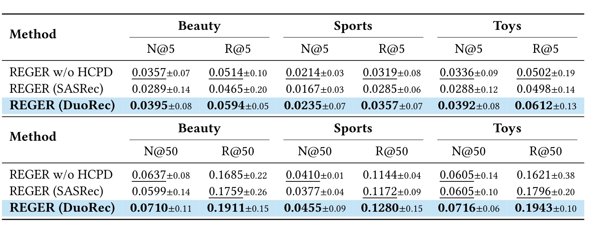
Table 7上半部分报告前5，下半部分报告前50，全部使用beam50，必须与主设置beam20区分。Beauty无HCPD的Recall@5为0.0514，SASRec教师后降至0.0465，而Recall@50从0.1685提高到0.1759；Sports和Toys也呈现长列表召回改善、前端指标受损的模式。DuoRec教师在所列指标上都提高，例如Beauty Recall@50为0.1911。这个结果说明蒸馏可能把更多相关物品拉进长列表，同时把较差的教师排序偏好传给学生，导致用户最先看到的几件物品变差。业务若只服务前几个位置，长列表改善并不足以抵消前端损失。
条件KL的梯度会纠正学生相对于教师低估的分支，同时也纠正相对于教师高估的分支；如果教师本身错了，就可能降低学生已经正确的判断。这与“蒸馏只会填补学生知识”不同，也说明为何评价不能只看一个K。当前表以两个教师支持教师选择的重要性，没有覆盖更多教师容量、训练数据差异或概率校准方法。表中部分标准差与主表因beam或显示精度而有不同，也不应机械合并为更多随机种子。复现时应先固定解码设置，再判断教师到底改善了召回覆盖、排序质量还是两者。
这类差异对阅读“弱教师也有用”的说法十分关键。前五位置通常决定用户首屏体验，前五十命中更接近候选覆盖；一个教师可以扩大覆盖，却不能保证把正确物品集中到最前面。SASRec行出现的方向分叉就是具体反例，而不是应被平均数抹平的随机异常。该表没有探索教师概率的温度校准，故不能判定问题来自教师表示质量、概率尺度还是两者。合理下一步是固定学生和解码预算，比较原教师、校准教师及混合教师，再分别报告各排名深度；不能因某个长列表指标提高就宣称原有前端能力没有受损。
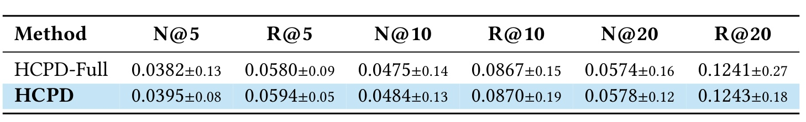
Table 8保留相同真值路径与超参数，只把学生KL的归一化从合法延续改成全词表，得到HCPD-Full。Beauty NDCG@5从0.0382提高到HCPD的0.0395，约3.4%相对；Recall@5从0.0580到0.0594，约2.4%相对。到Recall@20，两者为0.1241与0.1243，差距已很小，不能据此强调所有列表深度都有明显提升。作者没有为该表提供显著性检验，小幅优势首先应理解为支持归一化设计的实验线索。
这个对比与方法章的合法质量分解一一对应：全词表KL比合法条件KL多一个负对数合法质量项，交叉熵本来已经鼓励目标与合法概率，所以新增项会改变相对偏好匹配与质量推动的平衡。它并不意味着概率落在非法码永远无害，也不说明所有约束解码都应删除；REGER当前训练和解码组合有自己的边界。尤其HCPD-Full并不是“遍历完整前缀树”，名字中的Full指全词表归一化，两个变体仍只蒸馏真值路径。区分这两个“完整”概念，可以避免把本表误读为路径采样比全树监督更好；论文实际没有做这样的对照。
从梯度直觉看，全词表附加项会把更多概率质量推向合法集合，而其在合法分支内部的作用与学生已经赋予的概率有关。这会和“相对教师过高的分支需要被压低”发生张力，特别是在分支已经合法但内部排序仍不准确时。HCPD把这两种任务交给不同项：交叉熵承担观测目标及合法质量的锚定，条件KL承担合法候选之间的相对偏好。这样的分工是本文设计的精细处，不过本表只在Beauty和同一组超参数下比较，不能由六个均值完全证明梯度解释是唯一原因。其他数据、教师误差和非法质量水平下，额外惩罚可能仍有价值，需继续受控验证。
4. 总结
REGER最值得保留的结论是：物品关系要进入生成器实际使用的表征、信息通路与监督，而不能只寄希望于离散ID本身的语义组织。 GSR通过源物品到语义邻居的生成任务初始化整个网络；ITSA同时保留全局历史和完整物品边界内的有向局部转移；HCPD把目录级协同偏好翻译成合法分支条件分布，训练后无需教师参与推理。这三处都对应明确可替换模块，使复现和迁移有清楚的实验入口。论文理论部分也给出了实用的辨析工具：精确链式分解、采样路径权重和合法概率总质量是不同层面，不能只看到“KL”就认为目标等价。
对推荐工程，优先尝试的顺序应由现有瓶颈决定。若生成器已固定SID但内容知识不足，可先验证GSR与等预算预训练对照；若历史编码大量关注同一物品内部token，可比较普通注意力与ITSA的同参数替换；若有质量较好的判别教师，可先在TIGER骨干上测试HCPD，并同时监控前端NDCG、长列表Recall和非法生成率。该思路也可以启发层级检索或树形候选生成：把对完整候选的偏好聚合到共享前缀，可给中间决策更明确的监督。但这只是迁移方向，本文没有实证验证RAG文档树或通用大模型工具选择，不能将其写成已确认的跨领域收益。
需要保留四类限制。第一，离线商品顺序数据、5-core和20历史限制了结论外推，未覆盖长尾冷启动、超长行为和真实曝光偏差。第二，教师既能提供互补偏好也能传播错误，SASRec教师损害顶端排序的结果说明不能只看Recall@50。第三，效率表主要测TIGER加目标的训练与测试，不包含所有教师、tokenizer与GSR成本，且不同方法解码规则不同。第四，真值路径目标不是无条件的完整目录KL无偏估计，非法分支质量与推理全词表概率仍需单独监控。另有语义相关系数较低、部分跨数据基线引自已发表结果、微小优势缺少显著性证据等限制，都降低了“普适领先”这种表述的可信度。
后续复现至少做三组检查。首先固定物品文本、量化映射和数据切分，记录每个seed的前5、前10、前50及非法码率，避免用新的tokenizer差异替代生成器模块增益。其次构造等计算预训练、不同教师与不同偏好噪声，分离更多训练步数、语义邻域质量和协同分布质量的影响；特别应保留前端变差但长列表变好的负切面。最后把训练阶段总时间、教师打分缓存、目录变化后的前缀维护与实际服务延迟一起测量，确认纯生成器推理的部署简化是否足以覆盖离线额外成本。本文提供的是有结构的改进路线和可核验的证据集合，生产采用仍应通过目标场景的受控实验决定。
对于大模型研究者，最值得进一步检查的是“共享前缀上的知识传递是否保留任务边界”。本文的离散码有固定目录和合法叶子，通用自然语言生成则没有同样封闭的候选空间，因此不能不加条件照搬合法分支归一化。一个实际可执行的研究方向是在受限工具集或文档目录中先验证分支质量聚合，再扩展到开放输出。还应公开真值路径与教师采样路径的对照，测量覆盖差异是否影响长尾分支，而非只用精确分解定理给现有经验目标背书。把定理、代理目标与系统实现逐层对齐，才能保留REGER贡献中最可靠的部分。